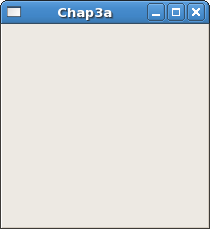
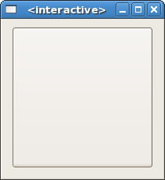

|
Gtk2Hs Tutorial |
||
|---|---|---|
The first thing to do, of course, is download Gtk2Hs and install it. You can always get the latest version from http://haskell.org/gtk2hs/ and several Linux versions have their own Gtk2Hs packages. For Windows there is an installer available.
The next thing is to open the Gtk2Hs API reference documentation for your version. You will need to use this extensively to be able to find the names for widgets, methods, attributes and signals you might want to use. The contents list all modules and there is also an index. Inside each module description there is also a class hierarchy. If a method, attribute or signal you expect is missing, it might belong to one of the superclasses of which your widget type is an instance.
To begin our introduction to Gk2Hs, we'll start with the simplest program possible. This program will create a 200x200 pixel window and has no way of exiting except to be killed by using the shell.

import Graphics.UI.Gtk main :: IO () main = do initGUI window <- windowNew widgetShowAll window mainGUI |
You can compile the above program with the Glasgow Haskell Compiler (GHC) using:
ghc --make GtkChap3a.hs -o Chap3a
assuming GtkChap3a.hs is the filename. Alternatively you can use the interactive GHCi, for earlier and later versions of Gtk2Hs. (Because of threading problems intermediate versions will not work interactively. Gtk2Hs does not work with Hugs.)
The first line imports the Gtk2Hs graphics library.
All Gtk2Hs programs run in main and the first line:
initGUI |
is called in all Gk2Hs applications. The next two lines of code create and display a window.
window <- windowNew widgetShowAll window |
Rather than create a window of 0x0 size, a window without children is set to 200x200 by default so you can still manipulate it. Widgets that can be visible (not all can) may be shown or hidden using their own methods, but the second line works on a widget (here the window) and all its children.
The last line enters the Gtk2Hs main processing loop.
mainGUI |
mainGUI is another call you will see in every Gtk2Hs application. When control reaches this point, Gtk2Hs will sleep waiting for X events (such as button or key presses), timeouts, or file IO notifications to occur. In our simple example, however, events are ignored.
Now for a program with a widget (a button). It's the classic hello world à la Gtk2Hs.

If the button is clicked it will display the text Hello World. This is implemented in the Haskell function hello with a button b as its argument. The type declaration actually states the type variable o is an instance of class ButtonClass. Gtk2Hs extensively uses Haskell classes to map the object hierarchy of the original Gtk widgets. Each widget in Gtk2Hs, of course, has a Haskell type.
Widgets, and the classes their types belong to, usually have attributes. These can be set either by named methods or by the general set function, which uses a list-like notation as shown below. Of special interest here is the containerChild attribute of the window (actually a superclass of the window) which states the relationship with the button. Because of this widgetShowAll window will also make the button visible.
Widgets are connected to other widgets in a graphical dependency tree (not to be confused with the class hierarchy). Gtk2hs also works with the Glade visual interface designer and, if you use Glade, such connections are visible in the Widget tree window. There is a separate introductory tutorial on how to use Glade with Gtk2Hs.
import Graphics.UI.Gtk
hello :: (ButtonClass o) => o -> IO ()
hello b = set b [buttonLabel := "Hello World"]
main :: IO ()
main = do
initGUI
window <- windowNew
button <- buttonNew
set window [windowDefaultWidth := 200, windowDefaultHeight := 200,
containerChild := button , containerBorderWidth := 10 ]
onClicked button (hello button)
onDestroy window mainQuit
widgetShowAll window
mainGUI
|
Gtk2Hs is event driven. The mainGUI function will sleep until something happens, like a mouse being clicked, a window being destroyed or something else typical for a widget. Such events then trigger signals which in turn trigger user defined functions to be evaluated. In this case the onClicked signal, emitted by the user clicking the button, is linked to the text being displayed on the same button. When the user destroys the window, unlike as with the first program, main now exits cleanly.
|
Contents |
|
Packing Widgets |